收录于合集

简 介
【作者介绍】 庞珣，清华大学国际关系学系教授；权家运，清华大学国际关系学系硕士研究生。
【本文来源】 《世界经济与政治》，2015年第6期
【编辑】 杨艺华
【审核】 曲雅倩，陈丽
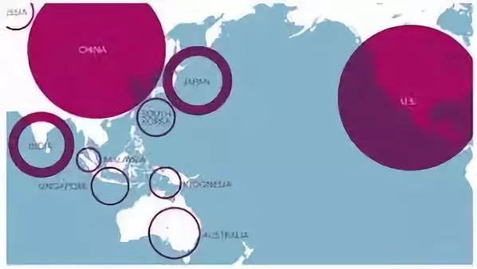
内 容 提 要
网络分析在理论和方法上的发展，不仅提供了权力回归其关系性本质的研究路径，而且能够将权力置于国际关系整体结构中进行理解和测量。基于网络分析研究路径，作者提出与物质性权力具有本质差异的社会性权力概念。社会性权力的来源和性质由行为体在关系网络中的位置及其联结方式决定，因而可区分为直达权力、通达权力、居间权力和借势权力四种类型。通过对外交关系、经济关系和军事安全关系三种类型的国际关系数据进行网络分析，社会性权力与物质性权力彼此关联但具有显著实证差异。在当今多元而复杂的国际关系中，物质性权力已经远远不能体现国家在国际关系中发挥影响的渠道、方式和程度，而社会性权力承认相互依存和密切联系，在研究和思考中具有越来越重要的理论和应用价值。不管是作为物质性权力的补充，还是作为具体研究中对权力的单独考量，社会性权力都是极其重要的概念和变量。而网络分析使得这一概念可操作化和可测量，又极大地提高了社会性权力在实证研究中的价值。
关 键 词
社会性权力；国际关系；网络中心度；网络分析
** 一、 从物质性权力到社会性权力**
物质性权力和社会性权力的根本区别在于，前者是一个占有性概念，强调国家个体目前所持有的国土内资源，而后者是一个关系性概念，将作为个体的国家置于国际关系网络中来考量国家的行为能力和影响力。 当然，关系的形成离不开物质基础且通常意在物质资源的获取，而物质在行为体间的流动本身也可构成和维持关系。但关系性权力中不仅涉及物质性资源，非物质性资源（如信息、承诺、制度等）对关系性权力同样至关重要。即使是物质资源，在社会性权力的理解中，包括国土内和国土外的、现实所有和未来可得的、自身获取和影响他国获取的物质性资源。 正是对权力基础（ base)的开放性、动态性、未来性的理解，使得社会性权力从本质上与物质性权力相区别，而并非对物质性资源本身重要性的不同理解。
社会性权力的基础架构不是有形的物质而是无形的关系，而物质和非物质资源在社会关系构成的网络中流动和循环。 关系网络和其中流动的资源，正如血管之于血液。由此， 社会性权力的大小也不完全由关系的规模来衡量，相反，关系联结的密度、强度、方式和联结对象都对权力产生影响，因为正是它们衡量了资源流动的大小、重要程度和流向等。
在理论研究中，权力的关系性质从来没有被否定过，有大量的研究细致地讨论和分析权力的关系本质。但是， 由于关系的复杂性、相对性和高维性，将权力置于关系及关系网络中进行实证测量一直被看作无法完成的任务。 令人欣慰的是，网络分析的最新发展提供了一系列概念、理论和分析方法，不但让国际关系学者对权力概念进行重新审视，而且使用网络分析方法对权力进行测量也已成为当前国际关系研究的热点之一。
网络分析将网络看成一个由多个行为体及其相互之间的关系构成的系统。 行为体在网络分析中被称为“节点（node或vertice）”，节点间的关系称为“边(tie或edge)"。关系网络定义了物质和非物质稀缺资源在系统内流动的方向和路径。网络分析不但关注网络结构对行为体带来的机遇和束缚，也分析网络本身的结构特征和动态演化。 网络分析对权力的定义，直观地理解为行为体在网络中的 “重要性"，权力基础正是行为体在网络中的联结程度和联结方式。由此，网络分析定义了四种不同的“网络中心性（network ****centrality ）"，对应四种不同的社会性权力，本文将其概括为直达权力、通达权力、居间权力和借势权力。
二、 直达权力与度数中心性
**
**
直达权力是国家拥有的直接社会关系所带来的行为能力、资源获得能力和对其他行为体的影响力。在网络分析中，直达权力着眼于国家直接从其他行为体（国家）那里获取所需资源的可能性和可靠性。因此，直接关系数量越多、联系越紧密，可能性和可靠性就越高。 直达权力在网络分析术语中为“度数中心性（degree centrality)“或“强度中心性（strength centrality）"，由节点在关系网络中拥有的直接双边关系的数量及紧密程度所决定。直达权力含义直观，而度数中心性也是对节点的联结情况的最为直观的测量。当网络的“边"被赋予权重来表达关系的强度时，可以对边数进行加权，即加权的度数中心性，称为强度中心性。
（一）直达社会性权力的全球分布
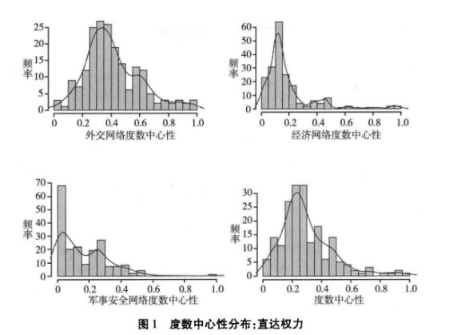
图1报告了195个样本国家直达权力的分布情况。图中显示， 在外交关系领域中，国家的直达权力大致呈正态分布，略向左偏，表明权力分布在全球范围内较为分散。虽然有少数国家拥有超群的外交直达权力，但并没有出现某些个别国家掌握超级权力而成为 “极"的现象。与外交领域相比， 经济和安全领域的直达权力分布情况有显著不同， 均呈现出幂法则（powerlaw)一具有很长的右尾， 表明有个别国家掌握极大权力，而其他国家远远落后。 比如， 在经济领域中，法国、德国、意大利和英国的直达权力不但最高，且四者之间非常接近，但排序靠后的其他国家的权力指数则大幅落后，到第 11位的希腊已经降至0 .5 **。在安全领域，美国的直达权力更是一枝独秀，权力值几乎是第 2名的两倍。**在外交关系网络中的直达权力变化情况显示，到第52位的哥伦比亚才开始从1降到0.5以下（0．498）。 从加总的直达权力来看，少数国家在直达权力体系中处于超群地位，大部分国家的网络权力集中分布在 [0，0 . 6] 之间。
**
**
（二） 直达权力定义的全球大国
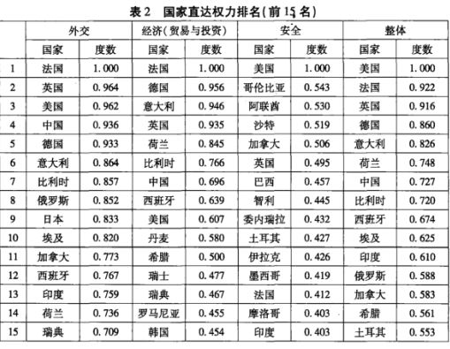
表2报告了在外交、经济、安全以及综合直达权力排名前15位的国家及其权力数值。 美国在外交领域的直达权力排名第 3，低于法国和英国，高于中国一个名次。中国排名第4，与前三甲国家的权力分值非常接近。在经济领域，作为经济实力最强（最大经济体）的美国的排名仅为第9，在数值上与排名第1的法国相差将近0 . 4 。而作为第二大经济体的中国排名也只在第7位，高于美国两个名次，落后于许多欧盟国家。
希腊一直以来是欧盟经济相对落后的国家 （所依据的经济数据未体现欧债危机后的经济状况）， **但其经济直达权力仍然高居第 11位，仅在美国之后两个名次。**在表2用于计算经济社会性权力的三个经济关系网络中， 在优惠贸易协定所定义的经济网络和双边投资协定所定义的经济网络中，美国和中国均不是自由贸易和投资的最积极倡导者和践行者，在签订此类协定的积极性上相对于欧盟国家均比较保守。 同时， 欧盟国家内部就有众多优惠贸易安排和双边投资协定。 数据显示，法国参与了90个双边投资协定和824个优惠贸易协定，希腊是36个双边投资协定和612个优惠贸易协定的签字国，罗马尼亚分别有78个双边投资协定和302个优惠贸易协定，而美国仅签署了39个双边投资协定和23个优惠贸易协定，中国的相应数字分别是95和38。
在安全领域中，美国因其庞大的军事联盟体系和作为众多国家的直接武器输出国而占据榜首，遥遥领先于其他国家。 中国没有进人前15名的榜单，直达权力数值仅为0.245，排名第62。有趣的是， **一些在物质意义上毋庸置疑的 “小国”，在安全领域内的直达权力意义上则成为“大国"，比如摩洛哥和约旦。**阿联酋身处40个同盟中，参与80次常规武器政府间交易；沙特阿拉伯身处个同盟中，参与73次交易；摩洛哥身在39个同盟中，参与60次交易；苏丹身在47个同盟中，参与24次交易；约旦身在36个同盟中，参与32个交易；阿尔及利亚身在39个同盟中，参与31次交易。而第1名的美国置身于59个同盟中，参与784次交易。
在三个领域中的权力数值加总后得到的排名中， **美国在外交和经济领域内的直达权力虽然表现并不突出，尤其在经济领域中较为落后，但由于它在安全领域内的遥遥领先而成为综合直达社会性权力排名第 1的国家。法国和英国紧随其后，而中国由于在安全领域的直达权力落后，在综合排名中位居第7，**落后于德国、意大利和荷兰。 中美直达权力的差距显著，在位次上相差 6位，在数值上相差0.230，两国权力差距主要是在安全领域内，中国所建立的直接关系在密度和强度上都远远落后于美国。
**
**
** **** 三、 通达权力与亲近中心性**
简单地说， 通达社会性权力由国家与国际网络中所有其他国家的联系情况决定，而不局限于直接联系。如果国家能够通过越少的步骤联系到网络越多的其他国家，它的通达权力就越大。从权力的影响范围来看，直达权力衡量的是国家的区域重要性和影响力，而通达权力则是衡量国家在整个关系网络中的整体影响。 在网络分析中，通达权力对应“亲近中心性"概念和测量方法。亲近中心度定义为某一节点与网络中其他节点的接近程度，由该节点到其他节点最短路径长度（步数）加总决定。由于比较的需要，用网络节点总数将中心度的尺度调整到0和1之间，计算公式可表达为：
（一）通达社会性权力的全球分布
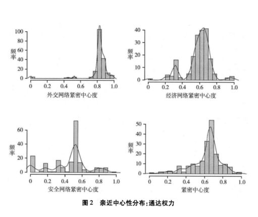
**通达权力与直达权力在样本国家中的分布情况有显著差异〈比较图 1和图2），更多的国家拥有较大的通达权力。**在外交领域，国家的通达权力的均值高达0.823，大部分国家的权力数值集中在0.7到1之间。外交网络密度大、集聚系数也高，是一个四通八达的网络，因此，即使没有直接联系的国家之间也很容易找到较短的路径达到彼此。经济和安全领域网络均呈现出国家的通达社会性权力分布向右移动。但是，两个领域的网络比外交网络在密度上低、集聚系数更低，因此通达权力并不如在外交领域中的分布那样靠右且平均。从总体上看，大部分国家的通达社会性权力集中在0.7到1之间，分布的样本均值为0.622。那些直达社会性权力较小的国家，尽管在直接施加影响和获取资源方面落后，但它们仍可以具有较强的间接影响和许多间接获取资源的渠道，如独立不久的南苏丹和黑山、袖珍国家图瓦卢、摩纳哥等。 普遍来看，国家外交的通达权力普遍高于它们的直达权力，只有英国和法国两个国家后者高于前者，但数值上差距均非常微小， 分别为0.023和0.032，名次分别下降两位和一位。 通达权力高出直达权力幅度最大的摩尔多瓦，直达权力仅为 0.187（排名144），而通达权力为0.7421（排名第31)。 其次是佛得角，它的直达权力排名第 160（数值为0.162），而通达权力排名第91（数值为0.659）。其他通达权力大大高于直达权力的国家还有亚美尼亚、冈比亚、塞拉利昂、塔吉克斯坦、吉尔吉斯斯坦等。
**
**
（二）拥有最大通达权力的 “大国”
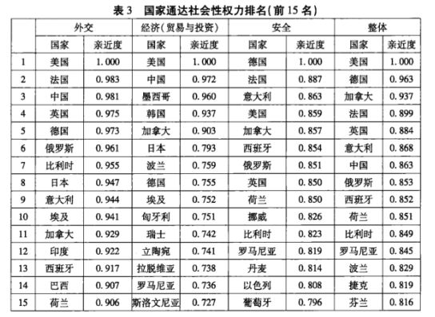
表3列出了通达权力排名前15位的大国。 **从外交领域的权力排名来看，具有最大通达权力的 15个国家绝大部分也在直达权力前15名的榜单上。值得注意的是，古巴和伊朗两个国家的通达权力排名分别为第23位和第20位。这两个国家就直接外交联系来看均处于外交网络中相对边缘的位置，直达权力排名分别为第36位和第33位，与通达权力之间存在着不小的差距，这部分是由于它们与像中国这样外交联结广泛的国家有直接联系，从而大大加强了它们与其他国家联系的通道数量，也缩短了通道的长度。由于相似的原因，朝鲜在外交领域的直达性社会权力排名第108位，而通达社会性权力则上升30多个名次，排第71名。在经济领域，中国的通达权力名列第2，仅次于美国，而且两国的权力在数值上差距微小。**法、德、意、英等国虽然在直达权力排名上高于中美两国，但其通达权力在经济领域不但低于中美，还排在墨西哥/韩国、加拿大、日本、波兰等国之后。 在安全网络中，中国的通达权力值为 0.561，排名第33位，比直达权力的第62名上升不少，但仍然没有进人前15名。而美国也从其直达权力第1的地位跌到通达权力的排名第4。在安全领域的通达权力上，德国跃居第1，法国和意大利紧随其后。将外交、经济和安全领域内的通达权力加总来看，美国的通达社会性权力排名第1，中国排名第7，与两者在直达社会性权力的排名差距相似。
**
**
** **** 四、居间权力和居间中心性**
第三种社会性权力是居间权力，是身居物资运输、信息流通和关系链条的交通要道所带来的权力。 当其他国家之间进行互动和交流，某国成为它们难以绕开的行为体，那么这个国家就具有了促进他国之间相互合作的“合作性权力"或阻止他国彼此接近的“强制性权力"。 在国际关系网络中，如果大量的国家之间要进行合作、冲突、交流等互动行为均需要某国的参与和配合时，那么这个国家就具有了强大的居间权力。 国家具有越强的居间权力越有可能参与到其他国家之间的交往和流通中，越有阻断沟通或充当桥梁的机会，从而对其他国家间的互动结果施加影响和控制。居间权力对应网络分析中的“居间中心度"，其定义为节点在网络中可以作为“中间人”的可能。当越多节点之间的最短路径通过某一个节点（如国家）时，这个节点对资源和信息在全网络中的流动起到越发重要的作用，能够对资源和信息的传输进行控制。网络居间中心性在数学上可表达为：
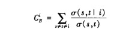
（一）居间权力的全球分布
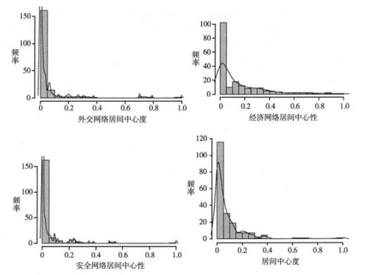
居间权力在样本国家之间的分布见图3，它们与上文已经讨论过的直达或通达权力均有极具差异的分布情况一无论是在外交、经济或安全各领域还是从综合权力来看，大部分国家完全不具有或仅具有微乎其微的居间权力 。 即使国家建立了较为广泛的直接关系网或能够在国际网络中四通八达，但并不一定能够对其他国家之间的互动或资源流动施加影响。只有极少数国家才占据了“关系要道"，成为他国之间沟通和互动的居间者。具体来看，尽管外交关系网络是一个高密度网络，但国家居间社会性权力的均值仅为0.042，其中只有4个国家的居间权力大于0.5，为权力远远高于其他绝大多数国家的“超级大国"。同样，在国际经济关系网络中，国家居间权力的均值也仅为0.148，一半的国家权力值在0.7以下，居间权力小到几乎可以忽略。样本中3/4的国家权力值小于0.214，只有13个国家的权力值大于0.5。安全领域的居间权力的集中程度更高，194个样本国家中有121个国家的权力为0，毫无居间权力。国家平均居间权力值为0·038，样本国家中只有20个国家的权力值大于0.1，几乎没有值得一提的居间权力。居间权力高度集中在3个国家中，它们的权力值大于0.5。
综合来看，能够拥有较强居间权力的国家在国际关系中是极少数，因为此种权力超越了传统上将权力在双边关系中考察，而是进人了另一个维度，即行为体A对行为体B与c之间关系的影响，并将其扩展到整个网络里所有其他国家之间的直接或间接双边关系。国家的居间综合社会性权力的均值仅为0．076，一半国家的权力值小于0·67，3/4的国家不到0.1，只有21个国家的居间权力在0．2以上。而具有最大权力的国家比第二强国的权力值高出0.3。 在国际关系网络中，绝大部分国家没有居间权力，仅有极少数国家能够在网络中占有特殊的位置而获得超群的居间社会性权力 。
(二）拥有最大居间权力的“大国”
那些拥有超强居间社会性权力的大国究竟有哪些？表4报告了排名前15位国家的居间权力。 由于大部分居间权力掌握在极少数国家手里，权力的分布极为不均，居间社会性权力的前 15名国家中大部分算不上“权力大国"。选择前15位仅是为了本文中4种社会性权力研究结果报告和分析在形式上保持一致。
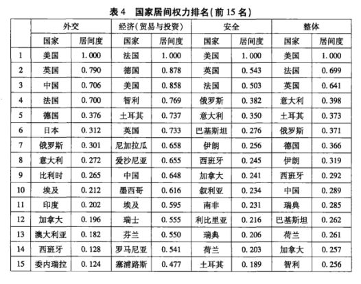 ****
最具有居间外交关系权力的国家是美国，其次是英国，中国位居第 3。英国、法国、西班牙、意大利、巴西、葡萄牙等国的居间权力较高的部分原因可能是它们与前殖民地地区和国家的特殊联系，而后者大都是与外界联系较为稀疏的国家，这些国家因此而占据了“中间人"的位置发挥居间影响。另外，一些地区性大国，如尼日利亚、埃及、马来西亚等因为有机会充当本地区国家之间以及其与外部地区的沟通桥梁而具有一定的居间权力。
**在经济领域中，法国和德国的居间权力最高，美国居第 3，前三名的权力数值落差不大。中国排名第9，**低于智利、土耳其、英国、尼加拉瓜、爱沙尼亚等国。 尼加拉瓜和爱沙尼亚两国的居间权力在经济领域高居中国之上，是由于这两个国家与在世界贸易网络的边缘地带国家具有贸易机制 一在优惠贸易协定定义的经济网络中，尼加拉瓜的居间权力排名第7，而爱沙尼亚排名第8。这两个国家在双边投资网络中居间权力仅仅排在第89位和第68位，在贸易网络中的居间性也仅排在第98位和第40位。但它们在优惠贸易协定网络中权力关系数值较大，因而在最后的经济排序中靠前。
在安全领域内，美国的居间权力高居榜首，成为无可争议的 “居间权力霸权国"，远远领先于第2名的英国和第3名的法国。俄罗斯排名第4，而中国居间安全权力得分仅为0.007，排名第29位，因此不在榜单之上。综合来看，中国虽然在外交领域的居间权力位居前三强，但其居间权力由于在安全方面落后，最后仅勉强进入前10名，以数值0.289远远落后于第1名的美国，也低于土耳其、伊朗和西班牙等国。
** **** 五、借势权力和特征向量中心性**
第四种社会性权力是借势权力。交际广泛和四通八达能够带来社会性权力（直达或通达权力），但在关系的数量和联结程度之外，与什么样的行为体有密切关系也意味着享有权力。前文讨论的居间权力其实也取决于联结对象而非联结数量，还有一种情况是，国家和网络中重要（中心）国家的直接而可靠的联系，也可以带来权力。 一国与拥有对资源和信息流动进行控制和网络中其他行为体进行影响的国家相联结，该国就能够借助中心国家的关系网络较为顺利和容易地获得所需资源和发挥影响力。 通俗地说，借势权力就是结交权势所带来的权势。 **与此同时，中心国家在社会关系中倾向于 “扎堆"、形成圈子，也就是中心国家比边缘国家更有可能和其他中心国家建立直接联系，而借势更多的是相互借势，较少单方面的借势。因此，借势社会性权力的大小实际上反映了国家在国际关系网络中的中心一边缘地位一一那些处于社交中心的国家相互借势，而处于边缘地位的国家除非通过特殊关系，否则很难借势。**在网络分析中，借势权力对应特征中心性，通过计算网络关系矩阵的特征向量来求出这一中心性的数值。
（一）借势社会性权力的全球分布
**外交领域内借势权力在国家间的分布大致成正态分布（见图 4），但比正态分布的尾部要粗，表明那些处于权力两端的国家数量比正态分布状态下要多，且没有外交借势权力“超级大国"存在。**在从0到1的取值区间中，国家外交借势权力的均值是0.513，正好在区间中部，1/4的国家权力值在0.387以下，3/4在0.6以下，总体上看国家数量在区间中的分布较为均匀。
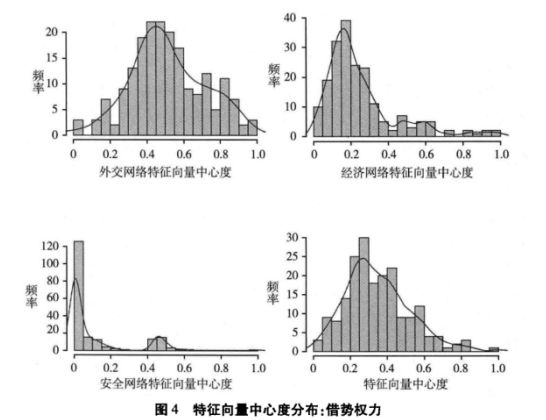
在经济领域，借势权力的分布呈冥规则现象，有一条很长的右尾。 当权力值到达0.300时，国家数量迅速下降，但持续了较长的区间后数量仍未降至零。经济借势权力的均值为0.253，一半国家权力值小于0.196，3/4国家的权力值小于0.3。在[0.3，0.4]区间内的国家有16个，在[0.4，0.5]区间内的国家有9个，在[0.5，0.6]区间内有8个国家，在[0.6，0.7]区间内有5个国家，在[0.7，0.8]区间内有2个国家，在[0.8，0.9]区间内有3个国家，高于0.9的共4个国家。
**在安全领域，借势权力的分布呈现双峰，即出现了明显的中心一边缘分布，而中心和边缘之间的 “权力中间地带"的国家数量极少，**在[0.2，0.4]区间内只有3个国家。157个国家集中在借势权力值小于0．2的边缘地带，而33个国家在权力值大于0.4的中心地带，其中以美国为权力核心，远远超过其他中心地带成员的权力。借势权力分布非常不均，其均值为0.112，而中位值则仅为0.010，第三分位点也仅为0.1。从加权得到的综合借势权力分布来看，权力值的均值为0.349，中位值0.315大致对称。但分布具有右长尾，样本中3/4的国家权力值小于0.45，仅有19个国家的权力值在0．60以上。
（二）拥有最大借势权力的大国
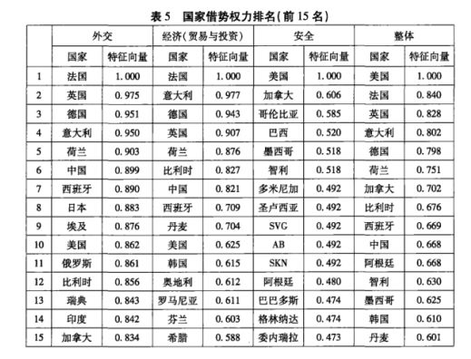
表5报告了借势权力排名前15位的国家。 **中国在外交网络中不但与较为边缘的国家有较强联系，也与外交网络中心国家有大量直接联系，因此排名高居第 6，比刚刚挤入前10名的美国高出4个名次。**法、英、德、意、荷占据了前5名，俄罗斯位居美国之下的第11名。 **需要注意的是，外交网络是一个联结密集的网络，因此借势权力在国家间的下降幅度缓慢。中国在经济领域内的借势权力表现与外交领域相似，为第 7名，排在中国之前的6个国家都是在经济上紧密联系同时本身又是世界经济中的活跃经济体。**美 **国仍然处于第 10的位次，仅比韩国高一个名次。而作为传统意义上大国的俄罗斯在“借势权力"一项排名仅第33位，源于它与其他贸易投资网络中重要国家之间的直接联系不够。在安全领域，美国再次雄踞榜首，而且由于这个领域中权力数值在国家间减速很高，美国的借势权力值显示出“霸权"的状态。有趣的是，进人安全借势权力前巧名的几乎都是美洲国家，**包括北美洲（美国、加拿大、墨西哥）、南美洲（哥伦比亚、巴西、智利、阿根廷、委内瑞拉、玻利维亚、秘鲁）、中美洲和加勒比海地区国家（洪都拉斯、巴拿马、哥斯达黎加、多米尼加、萨尔瓦多、巴哈马、牙买加、安提瓜和巴布达、巴巴多斯、圣文森特和格林纳丁斯、格林纳达、圣基茨与尼维斯联邦、圣卢西亚）。 而中国在安全网络中的借势权力数值仅为 0.7，排名第69位。综合来看，美国、法国、英国三国为借势权力的前三强，中国排名第10，拉美国家阿根廷、智利和墨西哥紧随中国之后。
**
**
** **** 六、社会性权力和物质性权力分布的实证差异**
物质性权力是传统国际关系学尤其是新现实主义研究者最为关注的权力类型，而社会性权力则是近来网络分析技术引入国际关系研究后对权力的关系本质的回归。毋庸置疑， 物质性权力与社会性权力在逻辑上存在着相关关系一对于任何行为体，建立社会关系首先需要自身具备一定物质基础，而社会关系的运用也会影响到行为体对物质性资源的获取和积累。但是，没有理由认为社会性权力和物质性权力会同步消长。相反，行为体常常可以通过经营和运用社会关系来弥补自身拥有的物质性权力的不足，而过于依赖或追求物质性权力也有可能损害社会性权力。
社会性权力和物质性权力在定义、权力来源、权力性质各方面都具有明显本质差异，关注的权力形式和内容在理论上也泾渭分明。 但是，从实证角度来看，社会性权力和物质性权力之间相关程度如何？测量路径和方式的不同是否能够反映两者理论上的差异？换句话说，如果社会性权力的网络分析测量并没有包含足够的新实证信息，那么使用现有的物质性权力测量就足够了。新的定义和新的测量若没有带来足够的新信息，那么建立和推广新的权力指标则无必要。因此，从实证上比较社会性权力和物质性权力，考察它们在分布上的相关性和差异性十分必要。 本文运用的物质性权力的测量指标为目前国际关系研究中最常使用的国家实力综合指标（CINC），数据来自战争相关指数项目，基于横截面上与社会性权力的可比性考虑，本文运用各国CINC指标2年以来的年均值。
（一）社会性权力与物质性权力的相关性
表6报告了各种不同社会性权力之间以及它们与国家实力综合指数的相关系数，呈现出以下特征：

首先，直达权力、通达权力、居间权力和借势权力四种社会性权力与物质性权力之间均有正相关关系。这表明它们之间有相互促进作用，即物质性权力的增加伴随着社会性权力的上升，反之亦然。 但是，从相关系数来看，社会性权力与物质性权力的相关系数值在0.335到0.514之间，为中等偏低相关，表明 它们之间虽然同时增长或减弱，但变化的幅度会有明显不同。比如，有可能出现物质性权力增长较大，而社会性权力虽有所上升，但却滞后于物质性权力的变化幅度，这种情况常发生在崛起中大国身上。或者物质性权力虽然有较大的衰落，但社会性权力在一段时间内仍然保持世界领先，这种情况常出现在衰落中的霸权国身上。
社会性权力和物质性权力的中等偏低相关性， 也说明社会性权力指数包含了大量国家实力综合指数所不反映的关于国家权力的信息，反映出了两者在对权力理解和关注点上的巨大差异。这 表明，在理论和实证上，社会性权力的考量的确在物质性权力之上增加了权力的新维度和新信息 。社会性权力和物质性权力既有正相关关系又无法很好地预示对方的变化，因此不应该也不可能对社会性权力和物质性权力在概念和实证上进行孰优孰劣的比较或争论。相反， 这两种权力都无法包含对方和替代对方，在研究中应该互为补充，根据研究问题单独或同时考量。
此外，表6也报告了不同类型社会性权力之间的相关系数。总体上看，社会性权力之间的相关性高于它们与物质性权力的相关性，但某些类型的社会性权力之间的相关性较弱，比如居间权力和通达权力之间正相关，但相关系数仅有0.430，低于居间权力与物质性权力之间的相关系数为0.510。借势权力和直达权力之间的相关性很高，相关系数达到0·935。这在很大程度上是因为具有直接联系越多的国家在概率上与中心国家直接联系的概率也越大。其他社会性权力之间的相关性都在0.6到0.8之间，属于较强的相关关系。相对而言，居间权力与其他社会性权力的相关性较弱。 基于不同社会性权力之间的相关性不太强，各自拥有可观的新信息，因此在实证中应该根据理论需要运用相应的社会性权力，而把它们进行混用或者将加总成为单一的社会性权力指标是不妥的。
**
**
（三） 社会性权力与物质性权力的分布特征对比
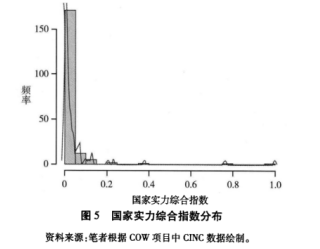
从图5我们可以看到，国家物质性权力分布比社会性权力的集中程度高很多。世界上绝大部分国家的物质性权力是如此的无足轻重，以至于 **194 个国家中有182个国家的物质性权力指数在0.100以下，．而那些强国的权力则极为超群，**在图中表现为极少数国家在权力的横轴上将无权的绝大多数远远抛下。 **中国的物质性权力雄踞第 1，得分为1.000。美国位居第2，在分值上与中国已经相差近0.250（整个区间的1/4），但仍远高于第3名的印度的物质性权力（权力指数不到0.4）。这呈现出物质性权力所定义的中美两极格局，其中美国处于较弱的一极。**在两极的权力分配大格局下，有一些称不上极的“大国"，如依次排名第3到第10的印度、俄罗斯、德国、巴西、韩国、英国、法国、意大利，它们从印度的物质性实力指数0.379迅速下降到意大利的不足0．100，而10名之外的国家的物质性权力微乎其微，从第11名土耳其的0·074到最后一名的瑙鲁的物质性权力的第一个非零数字出现在小数点后面第7位，因此绝大部分国家的物质性权力在数值上可以视为零，没有什么（相对）物质性权力。 这样，当我们只把对权力的理解集中在物质性权力上时，就自然会得到现实主义对国际关系的整体理解，即国际政治仅仅是 “大国间的游戏"，绝大多数国家没有资格参加这个游戏，微不足道的权力让这些国家无足轻重得可以忽略不计。
前文在对社会性权力的实证分析中也发现，社会性权力在全球194个样本国家之间的分布不均，数量较少的国家拥有较大的社会性权力，尤其以安全领域的社会性权力和居间权力的分布集中现象最为严重。但是，即使如此，它们也与物质性权力高度集中程度不可同日而语。 **社会性权力要分散得多，没有 “两超数强"的极化等级格局，更多数量、更多样性的国家具有举足轻重的社会性权力，这一现象在国际关系中不可忽视。在社会性权力的视野下，国际关系并非极少数大国之间的游戏。相反，关系网络中有大量的国家通过不同的方式和途径显示其重要性、发挥对地区乃至整个网络的影响力。**有趣的是，安全领域的社会性权力与物质性权力在集中状态和程度上最为接近，而在外交领域则呈现出最为均等的社会性权力分布状态。 安全领域内物质性和社会性权力的同时高度集中，也进一步解释了现实主义者对安全领域特别关注的原因。而更为关注外交和经济领域国际关系的学者，则将国际关系看成全球性的多主体、多层次和复杂交织的互动关系。
（四） 社会性权力与物质性权力：大国与小国
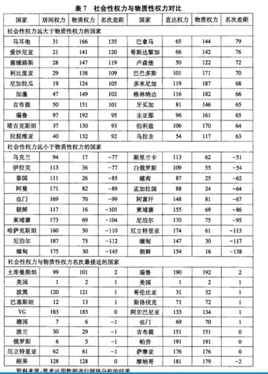
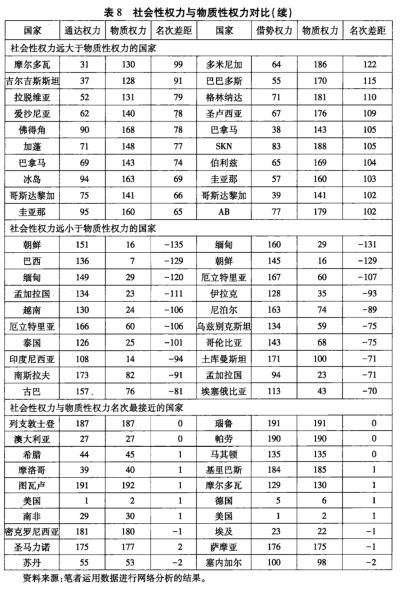
社会性权力与物质性权力所定义的大国和小国也呈现出相当大的差异。表 7和表8显示了物质性权力和社会性权力排名差异最大和最小的国家。一些国家在物质性权力方面堪称大国，而在社会性权力方面却非常落后。 **最典型的如朝鲜，其物质性权力排名相当靠前，为全球第 16位，而在社会性权力方面则是个毋庸置疑的小国，**其直达权力排第154名，通达权力排第巧1名，居间权力排第117名，借势权力排第145名。 物质性权力远远高于社会性权力的其他国家，均是在国际关系中相对边缘和孤立的国家，如伊朗、柬埔寨、缅甸、尼泊尔、越南等。 朝鲜和柬埔寨的物质性权力排名比所有4种社会性权力排名均高出1佣多个位次。
与此同时，一些国家的物质性权力排名非常靠后，但却拥有较大的社会性权力。 位次相差最大的为马耳他，其居间权力和物质性权力之间相差135个位次；卢森堡从物质性权力上看是一个极其微不足道的国家，排名第122位，但其通达权力却为全世界前50名。此外，一些中美洲加勒比地区的微型国家身处密集的关系网络中，具有较高的社会性权力，但这些国家在物质性权力考量下却都是极小的国家。
**仅有少数国家的物质性权力和社会性权力基本相当。其中，美国在两个方面权力的匹配度表现突出，均为前两名，是当今最有权力的国家之一。中国是社会性权力意义上的强国，其直达权力和通达权力均排名第 7，居间权力和借势权力均排名第10，基本都位列前10名。但从数值上看，中国的社会性权力在各方面都与稳居第1的美国有较大的距离。但是，从物质性权力的衡量来看，中国在1996年就超过美国跃居世界第1，而且之后这个领先的程度一直在迅速加大。**当然，需要注意的是，CINC指标对权力的计算主要着眼于那些对赢得战争可以产生直接影响的物质因素，本身就存在着争议。然而，对于中国的权力已经或很快将超过美国的断言和预测，大都是建立在对中国强大而迅速增长的物质性权力的强调上。那些在中美权力竞争分析中持更为谨慎态度的学者和政策分析家则更为关注两国社会性权力的对比及其趋势，尽管他们把社会性权力称为“软实力”、“国际影响力"、“网络权力"、“规则制定的能力"等。 本文对社会性权力和物质性权力的实证对比也印证了在中美权力竞争中出现两种泾渭分明的判断和预测的根本原因。
**
**
七、结论
对国际关系中的权力进行定义和测量从来都是一项困难的研究任务，因为权力本身具有多维性、具体性和关系性，而权力构成的因素又复杂多样，同时，在实证测量中还要面临选择标准和设定加总规则等诸多困难问题。然而，对权力的理解和测量在国际关系研究中的必要性却又是根本性的。在对权力概念达成共识和对权力测量达到一定准确度之前，许多重要的国际关系理论无法具有可证伪性。网络分析在理论和工具上的发展为重新定义、理解和测量权力提供了一整套概念、逻辑和方法，对国际关系学的权力研究必将具有广阔的运用价值和前景。
本文是对网络分析在权力理解和测量研究中的一个初步尝试，主要目的不在于建立一套社会性权力测量体系，而是试图通过运用网络分析对权力作为一种关系性概念进行理解，并在理论和实证上将社会性权力与物质性权力进行对比。在当今多元而复杂的国际关系中，物质性权力已经远远不能体现国家在国际关系中发挥影响的渠道、方式和程度，而社会性权力承认相互依存和密切联系，在研究和思考中具有越来越重要的理论应用价值。不管是作为物质权力的补充，还是作为具体研究中对权力的单独考量，社会性权力都是极其重要的概念和变量。而网络分析使得这一概念可操作化和可测量，又大大提高了社会性权力在实证研究中的价值。这是本文希望通过初步探索而传递的核心信息。
诚然，很多国际关系学者仍然希望能够有一个统一、综合的社会性权力测量体系，而不满足于在具体研究中仅就问题本身涉及的权力意义和范围进行定义和测量。同时，一套系统的权力测量体系本身也是值得追求的研究目标。权力一无论是物质性权力还是社会性权力一本身的高维性以及不同维度之间的关系，将是此类测量体系研究的一个难点和重点。因为一个综合的指标体系涉及关注什么样的国际关系网络、网络之间的关系以及不同网络中心度之间的关系，只有对这些问题进行切实的思考和解决，才能够对测量中指标的选取、权重的赋予和权力的加总等棘手问题进行解决。
更多阅读
国政学人 （ID：guozhengxueren)
为方便学人及时阅读高质量文章
别忘把国政学人设置 星标 哦~